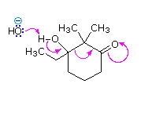

Select a problem from the list on the right. When the Show Problem button is pressed a curved arrow mechanism will be shown below. Using the drawing window, draw a structural formula (or formulas) for the compound(s) or ions formed by this mechanism. Additional instructions will be given in the information window. If more than one reaction product must be drawn, use the New button to start a second component. Small ions are drawn by pressing the element symbol on the left, with charges designated by using the +/- button. In the case where a general base formula is used (B:), you do not need to draw this species.
To evaluate your answer press the Check Answer button. A response will be presented in the information window.
 Information Window |
Problem 1 | |
|---|---|---|
| Problem 2 | ||
| Problem 3 | ||
| Problem 4 | ||
| Problem 5 | ||
| Problem 6 | ||